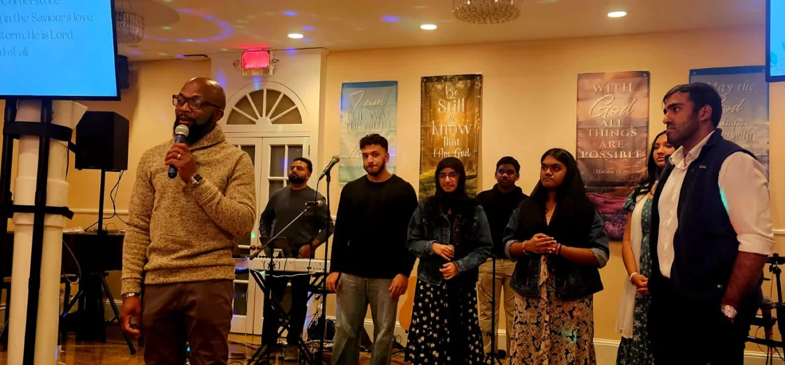

Bethel Worship Center · Bronxville, NY
Welcome to
Bethel.
Come worship with us this Sunday.
9:30 AM English / 10:30 AM Malayalam
Lower level of Golden Sword Church
A church in your neighborhood
Join us
this Sunday.
We’re a Pentecostal church in Bronxville, welcoming people from Yonkers and across Westchester. We worship in English and Malayalam, study the Bible, and pray together.
Coming for the first time? We’d love to meet you.

Find your community
Life at Bethel.
Time in the Word. Time with each other.
There’s more to the week.


You’re invited
This week
at Bethel.
Make time for worship, conversation, and prayer. Join us in Bronxville or online.
Full weekly scheduleAll times EasternYour first visit
We’ll see
you here.
10 Tanglewylde AvenueBronxville, NY 10708
Find Bethel on the lower level of Golden Sword Church. Allow a few extra minutes for nearby street or metered parking.
Which service should I come to?
Our English service begins at 9:30 AM and our Malayalam service at 10:30 AM. Choose the language you’re most comfortable with.
Can I bring my children?
Yes. Children are welcome to worship with their families. We don’t currently have a separate nursery or children’s program.
Do I need to sign up?
No registration is needed. Come to the service you’d like to attend.